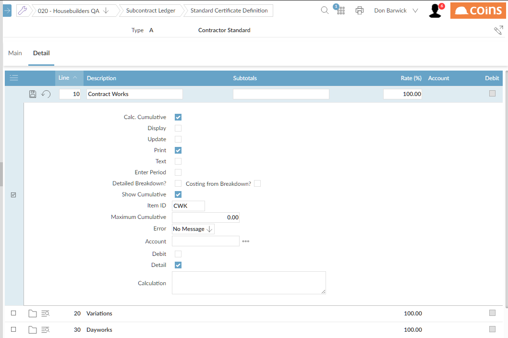

Suppose the gross amount is made up of the following:
Dayworks
The first three lines on the certificate definition are for entering the cumulative values for these items. The

Note that:
The Subtotals line is blank, because the measured work value is to be entered directly, not calculated from other values.
Measured work is entered as a cumulative value, so Calc Cumulativeis
The lines for